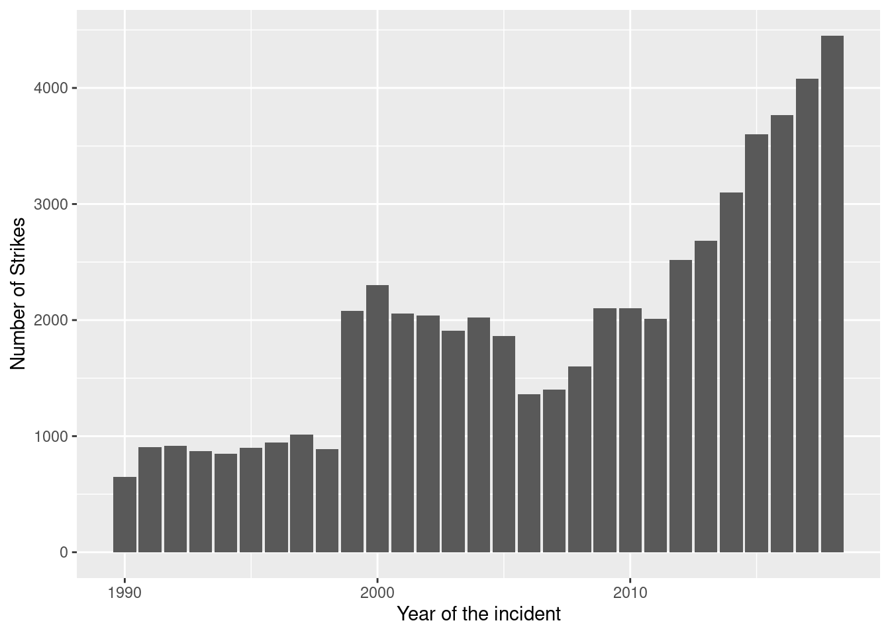

The database we used here contains records of reported wildlife strikes since 1990. this contains self reported strikes from airlines, airports, pilots, and other sources.
The following objects are masked from 'package:stats':
filter, lag
The following objects are masked from 'package:base':
intersect, setdiff, setequal, union
library(ggplot2)library(knitr)
This is how the data set looks like
head(wildlife_raw)
incident_date state airport_id airport
1 2018-12-31T00:00:00Z FL KMIA MIAMI INTL
2 2018-12-29T00:00:00Z IN KIND INDIANAPOLIS INTL ARPT
3 2018-12-29T00:00:00Z N/A ZZZZ UNKNOWN
4 2018-12-27T00:00:00Z N/A ZZZZ UNKNOWN
5 2018-12-27T00:00:00Z N/A ZZZZ UNKNOWN
6 2018-12-27T00:00:00Z FL KMIA MIAMI INTL
operator atype type_eng species_id species damage
1 AMERICAN AIRLINES B-737-800 D UNKBL Unknown bird - large M?
2 AMERICAN AIRLINES B-737-800 D R Owls N
3 AMERICAN AIRLINES UNKNOWN <NA> R2004 Short-eared owl <NA>
4 AMERICAN AIRLINES B-737-900 D N5205 Southern lapwing M?
5 AMERICAN AIRLINES B-737-800 D J2139 Lesser scaup M?
6 AMERICAN AIRLINES A-319 D UNKB Unknown bird N
num_engs incident_month incident_year time_of_day time height speed
1 2 12 2018 Day 1207 700 200
2 2 12 2018 Night 2355 0 NA
3 NA 12 2018 <NA> NA NA NA
4 2 12 2018 <NA> NA NA NA
5 2 12 2018 <NA> NA NA NA
6 2 12 2018 Day 955 NA NA
phase_of_flt sky precip cost_repairs_infl_adj
1 Climb Some Cloud None NA
2 Landing Roll <NA> <NA> NA
3 <NA> <NA> <NA> NA
4 <NA> <NA> <NA> NA
5 <NA> <NA> <NA> NA
6 Approach <NA> <NA> NA
Table1 <-head(wildlife_raw)kable(Table1)
incident_date
state
airport_id
airport
operator
atype
type_eng
species_id
species
damage
num_engs
incident_month
incident_year
time_of_day
time
height
speed
phase_of_flt
sky
precip
cost_repairs_infl_adj
2018-12-31T00:00:00Z
FL
KMIA
MIAMI INTL
AMERICAN AIRLINES
B-737-800
D
UNKBL
Unknown bird - large
M?
2
12
2018
Day
1207
700
200
Climb
Some Cloud
None
NA
2018-12-29T00:00:00Z
IN
KIND
INDIANAPOLIS INTL ARPT
AMERICAN AIRLINES
B-737-800
D
R
Owls
N
2
12
2018
Night
2355
0
NA
Landing Roll
NA
NA
NA
2018-12-29T00:00:00Z
N/A
ZZZZ
UNKNOWN
AMERICAN AIRLINES
UNKNOWN
NA
R2004
Short-eared owl
NA
NA
12
2018
NA
NA
NA
NA
NA
NA
NA
NA
2018-12-27T00:00:00Z
N/A
ZZZZ
UNKNOWN
AMERICAN AIRLINES
B-737-900
D
N5205
Southern lapwing
M?
2
12
2018
NA
NA
NA
NA
NA
NA
NA
NA
2018-12-27T00:00:00Z
N/A
ZZZZ
UNKNOWN
AMERICAN AIRLINES
B-737-800
D
J2139
Lesser scaup
M?
2
12
2018
NA
NA
NA
NA
NA
NA
NA
NA
2018-12-27T00:00:00Z
FL
KMIA
MIAMI INTL
AMERICAN AIRLINES
A-319
D
UNKB
Unknown bird
N
2
12
2018
Day
955
NA
NA
Approach
NA
NA
NA
Let’s see the trend over years Is this really increasing over time or proportionately the same???
ggplot(wildlife_raw,aes(x=incident_year,))+geom_bar()+labs(x="Year of the incident", y="Number of Strikes")

Data purification
There were a lot of NAs in the data set and treated accordingly.